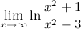
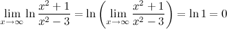
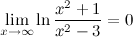

Непрерывность

Определение
Функция f(x) называется непрерывной в точке a, если:
- функция f(x) определена в точке a и ее окрестности;
- существует конечный предел функции f(x) в точке a;
- это предел равен значению функции в точке a, т.е. limx→af(x)=f(a).
Замечание
При нахождении предела функции y=f(x), которая является непрерывной, можно переходить к пределу под знаком функции, то есть limx→af(x)=f(limx→ax)=f(a).
Пример
Задание 
Решение 
Ответ 
Дифференцируемость

График функции (чёрная кривая) и касательная прямая (красная прямая)
Дифференци́руемая (в точке) фу́нкция — это функция, у которой существует дифференциал (в данной точке). Дифференцируемая на некотором множестве функция — это функция, дифференцируемая в каждой точке данного множества. Дифференцируемость является одним из фундаментальных понятий в математике и имеет значительное число приложений как в самой математике, так и в других естественных науках.
Назад